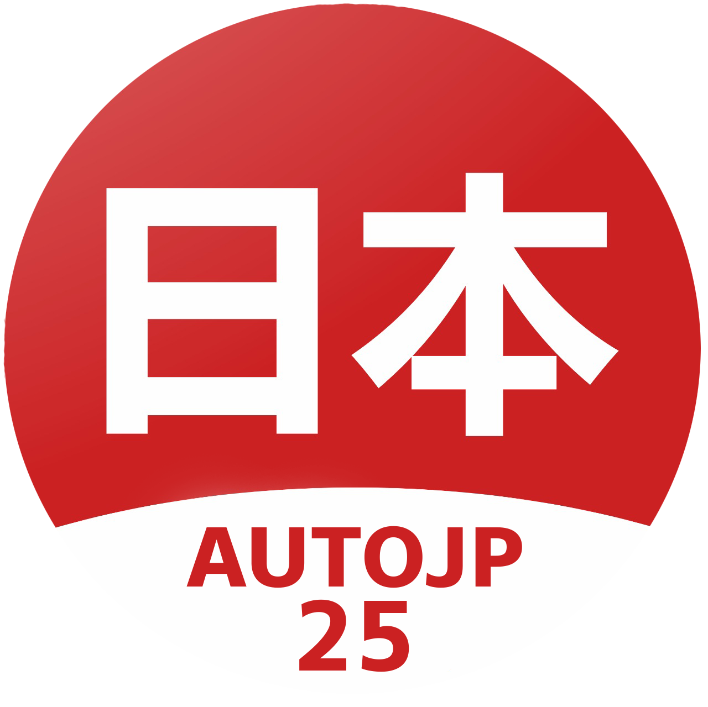

Компания «Auto Japan 25» уже более 7 лет занимается подбором, доставкой и растаможкой автомобилей с аукционов Японии. Также мы организовываем покупку авто из Китая под заказ — с полным сопровождением на всех этапах.
Мы понимаем, насколько важно получить надёжный и выгодный автомобиль. Поэтому обеспечиваем клиентам полный комплекс услуг: от подбора оптимальных моделей до оформления всех документов и доставки в ваш регион.
Наши опытные менеджеры ежедневно отслеживают лучшие предложения по авто из Японии и Китая, переводят аукционные листы, консультируют по техническому состоянию и юридической чистоте, а также лично сопровождают процесс покупки до момента передачи автомобиля владельцу.
Мы предлагаем прозрачную схему работы, конкурентные цены, полную финансовую отчётность и надёжную логистику. Импортные автомобили — это отличное сочетание цены, качества и современного оснащения. Мы подбираем и доставляем авто под заказ в любой регион России — быстро, выгодно и с гарантией. Вам не нужно тратить время — мы сделаем всё за вас.
Выбирайте профессионалов — «Auto Japan 25». Японские и китайские автомобили — под ключ, надёжно и с гарантией результата и прозрачностью на каждом этапе.
С нами вы получаете:
Свяжитесь с нами, чтобы узнать больше или заказать авто под ключ напрямую из Японии или Китая. Мы подберём лучшее предложение по вашему бюджету и требованиям.